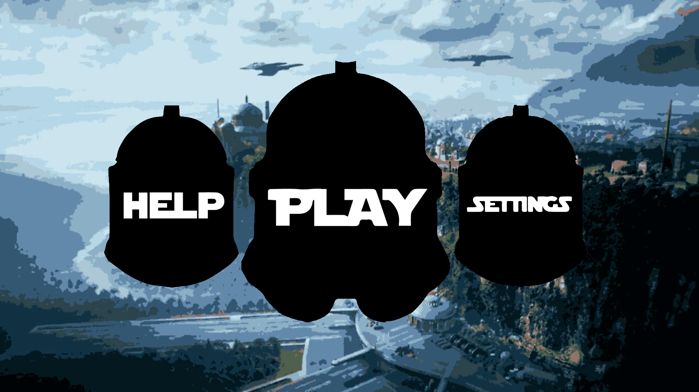
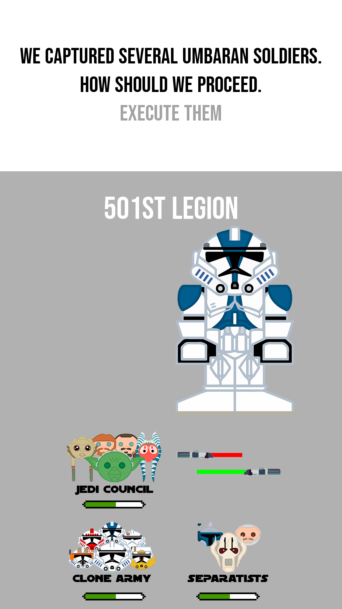
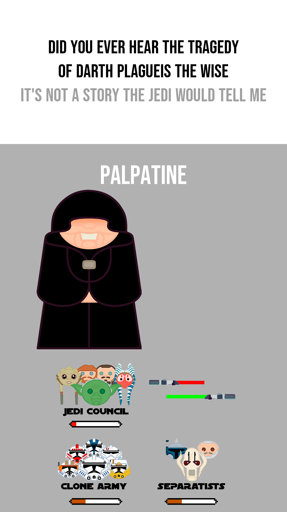
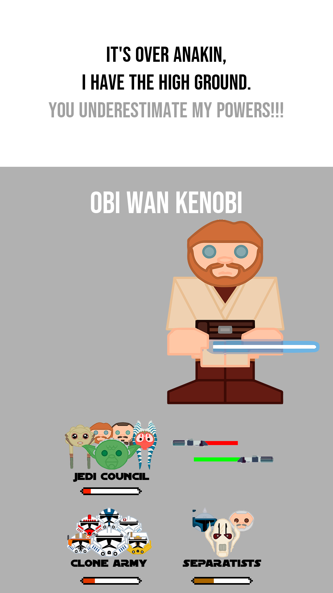
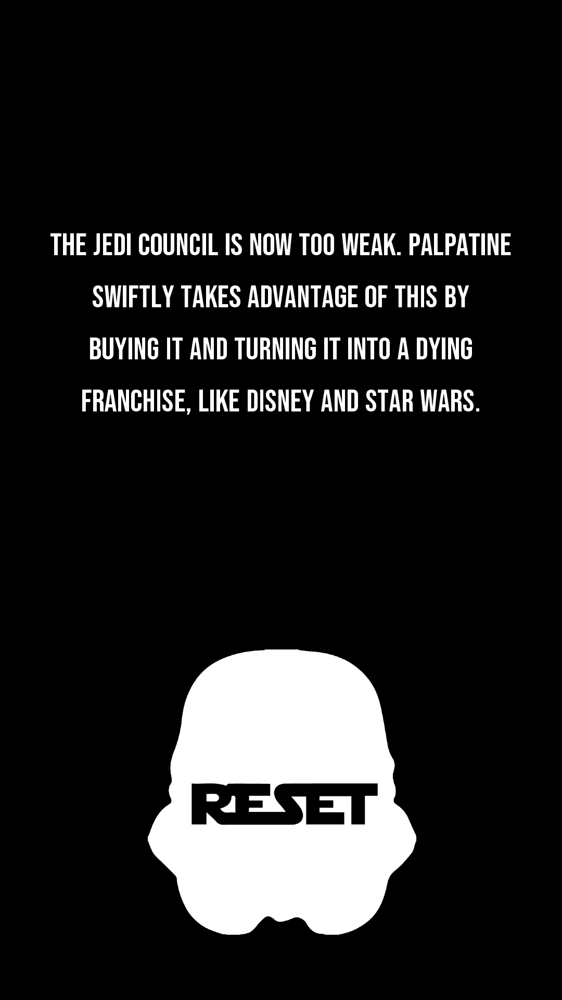
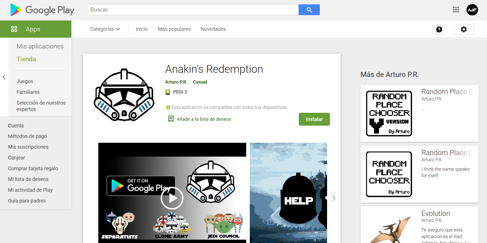

Desde que aprendí a programar, siempre he dedicado una parte de mi tiempo libre a elaborar proyectos personales de cualquier tema que me interese en el momento. En ocasiones, decidí desarrollar videojuegos, que más tarde publicaba. Sin embargo, estos juegos tenían normalmente un proceso de elaboración de un par de semanas. Esto afectaba a la calidad final del juego, y siempre me quedaba con ganas de ser un poco más ambicioso, de poner toda mi atención durante meses en un único proyecto, que concentrase el esfuerzo de varios proyectos a la vez. El CAS me dio un motivo para llevar a cabo esto, y me impulsó a empezar a divagar sobre qué debería hacer bien al principio de curso. Durante el verano, valoré mis opciones, y comencé el proceso de conceptualización, haciendo bocetos y esquemas del aspecto y la forma de funcionar del videojuego. Finalmente, me decidí a hacer un videojuego sobre una de mis sagas preferidas: Star Wars.
Inspirándome en otros juego que había jugado con anterioridad, concluí finalmente cómo sería el juego. El jugador, personificado en el juego como Anakin Skywalker, interaccionaría con personajes mediante una interfaz muy simple, en la que estos le preguntarían interrogantes sobre su opinión, órdenes u intenciones. El jugador sería capaz de responder a todas las preguntas únicamente con dos opciones, que se mostrarían en la pantallas deslizando el dedo de izquierda a derecha, o viceversa. Dependiendo de la respuesta que se dé, 4 facciones diferentes en el juego se verían afectadas de forma negativa o positiva, cosa que se representaría en forma de 4 barras de vida que suben o bajan de nivel. El jugador deberá mantener estas barras lo más equilibradas posibles, pues cada vez que una de ellas llegase a un mínimo, o aun máximo, el juego terminaría. Las decisiones del jugador podrían afectar a más de una facción a la vez, por supuesto. Planifiqué que habría 4 intervenciones posibles por personaje, con 2 respuestas disponibles. Habría un total de 25 personajes. Una vez termina la partida, el final correspondería a la situación en la que ha perdido el jugador (qué facción ha llegado al mínimo/máximo), con un total de 24 finales. Una vez decidí esto, me puse manos a la obra, y escribí todo el "guión" del juego al cabo de un par de semanas.
Comencé el proceso de programación del videojuego una vez comenzado el curso. Después de unas 50 horas de trabajo, más de 7000 líneas de código, y decenas de versiones compiladas, el juego estaba listo para ser lanzado. A lo largo de este proceso, son innumerables las ocasiones en las que me quedé atascado intentando arreglar bugs en el programa. Sin embargo, fue una vez terminada esta fase del proyecto cuando me encontré con el mayor problema de todos: los gráficos. Hasta ahora, había utilizado borradores hechos por mi mismo de los personajes y fondos de pantalla improvisados. Mi idea inicial durante la programación del proyecto había sido dedicar un poco más de tiempo a dibujar y diseñar yo mismo los gráficos, pero llegados a este punto, me di cuenta de que sto no solo sesgaría de forma importante la calidad del producto final, sino que además resultaría en una carga de trabajo innecesaria. Es por esto que me decidí a contactar con alguien que me ayudase.
Navegando por internet, encontré a un usuario de Instagram (star_wars_cartoon) que dibujaba personajes de Star Wars, incluyendo a los que introje yo en mi juego. Le mandé un mensaje pidiendo su ayuda con los gráficos de mi videojuego, y me respondió que le encantaría ayudarme. Fue entonces cuando comencé la tercera fase del proyecto, que consistía en adaptar sus dibujos a las necesidades del programa informático. Utilizando el programa Adobe Illustrator, vectoricé las ilustraciones para poder darles mayor calidad en pantallas más grandes. Con Photoshop modifiqué el tamaño de los dibujos, y las recorté, quitando el blanco de fondo. A partir de las ilustraciones de los personajes creé los logos que designarían a las 4 diferentes facciones, además del menú inicial.





Una vez terminado la versión final del juego en sí, y de haber implementado gráficos adecuados, pasé a la fase de adecuar el producto al jugador. Diseñé un pequeño tutorial, accesible desde la pantalla principal, que te explica las mecánicas del juego. Añadí un menú de preferencias, donde el jugador es capaz de escoger la calidad de las transiciones entre intervenciones de los personajes (que en algunos dispositivo realentizaba notablemente el ritmo de juego), además de la velocidad a la que las facciones suben y bajan su nivel de satisfacción (con el fin de poder regular la duración delas partidas). Finalmente, añadí una introducción, en la que se muestran al principio del juego, antes de acceder al menú principal, los contactos del artista que proporcionó los gráficos, y el mío; además de un disclaimer explicando que la propiedad intelectual de los personajes representados en el juego pertenece a Disney, y que el proyecto no tiene ningún tipo de beneficio económico.
Llegados a este punto, lo único que faltaba por hacer era encargarse de la campaña "publicitaria", o en otras palabras, como se iba a difundir el videojuego. El juego sería publicado en la Play Store, disponible para cualquier dispositivo Android. En esta plataforma se proporcionan varias formas para customizar el aspecto de la interfaz donde el usuario descarga la aplicación. Entre otras, permite enseñar capturas del juego, algo que llevé a cabo con relativa facilidad en mi móvil. En segundo lugar, existe la posibilidad de mostrar un tráiler de la aplicación. Utilizando programas de edición como After Effects, desarrollé un primer tráiler de prueba.
Este tráiler tenía una gran debilidad, sin embargo: no se mostraba en ningún momento al juego en sí. Me dejé llevar demasiado por mis ambiciones en animación 3D (el segmento el principio del tráiler), y descuidé el mostrar la propia aplicación. Es por esto que opté por repetir el desarrollo del tráiler, esta vez con un enfoque más simplista, conciso, y honesto con lo que el juego realmente es.
Una vez hecho esto, publiqué el tráiler final en YouTube y Reddit, con los respectivos contactos (del artista y mío) y disclaimers. Con esto, di las gracias al artista que me ayudó, hice las últimas actualizaciones y retoques al juego (notablemente, la adaptación a pantallas más pequeñas, y la reducción del peso del archivo eliminado imágenes innecesarias), y la lancé a la Play Store.

Posibles Mejoras
En primer lugar, haber encontrado los gráficos necesarios para desarrollar el juego antes de programarlo habría sido lo más óptimo, ya que habría ayudado a poder planear los diálogos mejor, a parte del aspecto general de la aplicación. Debería haber sido más previsor respecto a la carga de trabajo que resultaría dibujar yo mismo las imágenes necesarias.
En segundo lugar, el uso de un motor gráfico habría sido una buena idea. Los motores gráfico, como Unity o Unreal Engine, permiten desarrollar videojuegos de una forma mucho más sencilla, permitiéndote incorporar funciones preprogramadas en el propio motor, en vez de tener que hacerlo tu mismo. Yo, sin embargo, decidí desarrollar todas las funciones en el videojuego desde 0. Esto me ayudó a comprender mucho mejor lo que ocurría en todo momento en el programa, pero sesgó seriamente la calidad del producto final. Si hubiese utilizado un motor gráfico podría haber conseguido un videojuego con una mecánica de juego mucho más optimizada, a parte de estéticamente más agradable.
En un último lugar, me tomó unas 30 horas terminar el primer tráiiler, a pesar de que al final no lo utilicé por los motivos previamente explicados. Si hubiese planeado mejor la "campaña publicitaria" del juego, en vez de haberme lanzado a hacer la primera idea que se me cruzó por la cabeza (en este caso, una animación con cazas estelares), podría haber ahorrado mucho tiempo, tiempo que podría haber empleado en cosas más útiles.